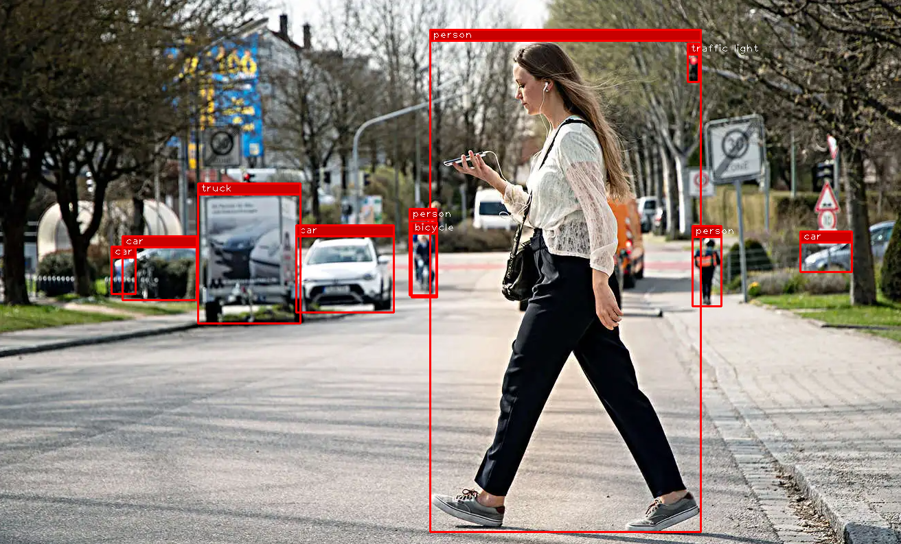

Objekterkennung mit YOLO
In dieser Praktikumsaufgabe verwenden wir den YOLO Objektdektor von Ultralytics, um Objekte in einem Bild zu erkennen.
Ultralytics installieren
Installieren Sie zunächst das Ultralytics Paket sowie gdown
pip install ultralytics gdown
Mehr Details finden Sie hier.
Das YOLO-Netz herunterladen
Wir müssen auch noch die korrekten Gewichte für das zu verwendenen YOLO-Netz herunterladen. Verwenden Sie folgenden Code um die vortrainierten Gewichte von Google-Drive herunterladen
# Download YOLO Checkpoint from google drive
url = "https://drive.google.com/file/d/1q-CNPubqyz4OQaPsH5nc5eS2Buy-Fkug/view?usp=sharing"
output = "yolo11n.pt"
md5 = "md5:261474e91b15f5ef14a63c21ce6c0cbb"
gdown.cached_download(url, output, hash=md5, fuzzy=True)
YOLO laden und ausführen
Instanzieren Sie das YOLO-Modul mit den gerade heruntergeladenen Gewichten (vgl. hier). Verwenden Sie cv2.imread um ein Bild zu laden. Führen Sie dann das YOLO-Netzwerk auf diesem Bild aus. Schauen Sie sich die Ausgabe an.
boxes: ultralytics.engine.results.Boxes object
keypoints: None
masks: None
names: {0: 'person', 1: 'bicycle', 2: 'car', 3: 'motorcycle', 4: 'airplane', 5: 'bus', 6: 'train', 7: 'truck', 8: 'boat', 9: 'traffic light', 10: 'fire hydrant', 11: 'stop sign', 12: 'parking meter', 13: 'bench', 14: 'bird', 15: 'cat', 16: 'dog', 17: 'horse', 18: 'sheep', 19: 'cow', 20: 'elephant', 21: 'bear', 22: 'zebra', 23: 'giraffe', 24: 'backpack', 25: 'umbrella', 26: 'handbag', 27: 'tie', 28: 'suitcase', 29: 'frisbee', 30: 'skis', 31: 'snowboard', 32: 'sports ball', 33: 'kite', 34: 'baseball bat', 35: 'baseball glove', 36: 'skateboard', 37: 'surfboard', 38: 'tennis racket', 39: 'bottle', 40: 'wine glass', 41: 'cup', 42: 'fork', 43: 'knife', 44: 'spoon', 45: 'bowl', 46: 'banana', 47: 'apple', 48: 'sandwich', 49: 'orange', 50: 'broccoli', 51: 'carrot', 52: 'hot dog', 53: 'pizza', 54: 'donut', 55: 'cake', 56: 'chair', 57: 'couch', 58: 'potted plant', 59: 'bed', 60: 'dining table', 61: 'toilet', 62: 'tv', 63: 'laptop', 64: 'mouse', 65: 'remote', 66: 'keyboard', 67: 'cell phone', 68: 'microwave', 69: 'oven', 70: 'toaster', 71: 'sink', 72: 'refrigerator', 73: 'book', 74: 'clock', 75: 'vase', 76: 'scissors', 77: 'teddy bear', 78: 'hair drier', 79: 'toothbrush'}
obb: None
orig_img: ...
orig_shape: (793, 1312)
path: 'image0.jpg'
probs: None
save_dir: 'runs\\detect\\predict'
speed: {'preprocess': 3.325299941934645, 'inference': 30.369200045242906, 'postprocess': 75.59899997431785}]
Lösung anzeigen
# Load the image from disk
image = cv.imread("image.jpg")
# Load the YOLO-Model
model = YOLO("yolo11n.pt") # pretrained YOLO11n model
# Run inference on the image
results = model([image])
print(results)
Aufgabe 1 - Zeichnen Sie die YOLO-Detektionen
Iterieren Sie über alle Ergebnisse. In jedem Ergeniss finden Sie ein boxes-Attribut. Iterieren Sie über jede dieser Boxen. Besorgen Sie sich die Klassen-ID der Detektion (box.cls.item()) und den dazugehörigen Klartextnamen aus der result.names Liste. Die Koordinaten der Detektion finden Sie im box.xyxy Tensor.
Beachten Sie: YOLO verwendet intern PyTorch. Dieser Tensor liegt i.d.R. auf der GPU und muß mittels .cpu() zunächst auf die CPU übertragen werden. Indizieren Sie dann den ersten Eintrag im Tensor und entpacken Sie das 4er-Tupel um die \((x_1,y_1,x_2,y_2)\) Koordinaten zu finden.
Verwenden Sie cv2.rectangle um die Detektion zu zeichnen. Verwenden Sie cv2.putText um den Klassennamen über die Box zu schreiben.
Wenn Sie alles richtig gemacht haben sollten Sie ein Bild ähnlich diesem sehen:
{kind=link}
Lösung anzeigen
# Iterate over all results (only one in this case)
for result in results:
# Iterate over all boxes for current result
for box in result.boxes:
# Get the name of the detection
cls_id = box.cls.item()
cls_name = result.names[cls_id]
# Get the coordinates
x1,y1,x2,y2 = box.xyxy.cpu()[0]
# Draw a nice frame for visual reference
cv.rectangle(image, (int(x1),int(y1)), (int(x2),int(y2)), (0,0,255), 2)
cv.rectangle(image, (int(x1),int(y1-16)), (int(x2),int(y1)), (0,0,200), -1) # Filled bar on top
cv.rectangle(image, (int(x1),int(y1-16)), (int(x2),int(y1)), (0,0,255), 2) # Filled bar on top
# Put the class label on top
cv.putText(image, cls_name, (int(x1+4), int(y1-4)), 1, 1, (255,255,255), 1)